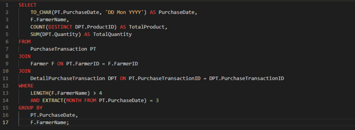
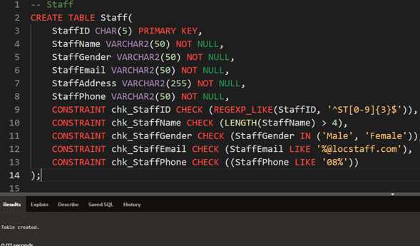
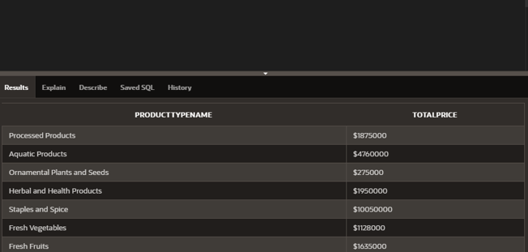

Tentang Proyek
LocalFarmer adalah soal proyek yang saya kerjakan untuk mata kuliah Database Fundamental menggunakan APEX Oracle. Aplikasi LocalFarmer ini dirancang sebagai platform digital yang menghubungkan petani lokal dengan konsumen untuk memfasilitasi jual-beli produk pertanian segar secara langsung. Di proyek ini saya belajar mengenai fundamental basis data (membuat dan manipulasi data).
Untuk detail lebih lanjut, silakan unduh dokumentasi proyek di bawah ini.
Galeri Visual
Beberapa tangkapan layar dari database LocalFarmer.


